Capítulo 8 Um gráfico em camadas: o pacote ggplot2
No capitulo 3 vimos os tipos básicos de gráficos em R. Vamos agora rever estes gráficos utilizando o pacote ggplot2, mais um pacote do grupo tidyverse. O ggplot2 fornece uma gramática coesa para os elementos de um gráfico, o que torna o aprendizado mais simples, rápido e os códigos mais reutilizáveis. Uma segunda vantagem é a elevada capacidade de formatação dos elementos gráficos com relativa simplicidade.
Aqui veremos somente uma introdução para que você acompanhe o restante do material. Você pode buscar por ggplot2 tutorial para encontrar uma imensa variedade de excelentes tutoriais na internet.
Uma das primeiras características que devemos ter em mente é que o ggplot2 gera gráficos a paritr da colunas de um data frame.
Se ainda não o fez, instale e carrege o ggplot2.
install.packages("ggplot2")
library(ggplot2)Iremos utilizar também os pacotes readr e o dplyr que podem ser instalados e carregados por:
install.packages("readr")
install.packages("dplyr")
library(readr)
library(dplyr)8.1 Hubbard Brook stream flow
Vamos fazer um histograma dos dados de vazão da tabela HubbardBrook.csv (dados retirados de tiee.esa.org). Veja novamente a tabela:
hub = read_csv("C:/seu_caminho/IntroR/HubbardBrook.csv")
hub## # A tibble: 6 x 4
## Year Treatment Flow Precipitation
## <dbl> <chr> <dbl> <dbl>
## 1 1958 Deforested 645. 1168.
## 2 1959 Deforested 1012. 1483.
## 3 1960 Deforested 825. 1321.
## 4 1961 Deforested 470. 980.
## 5 1962 Deforested 777. 1232.
## 6 1963 Deforested 774. 1139.8.1.1 Entendendo a gramática do ggplot
Considere o histograma da variável Flow.
ggplot(data = hub, mapping = aes(x = Flow)) +
geom_histogram(color = "blue", fill = "lightblue")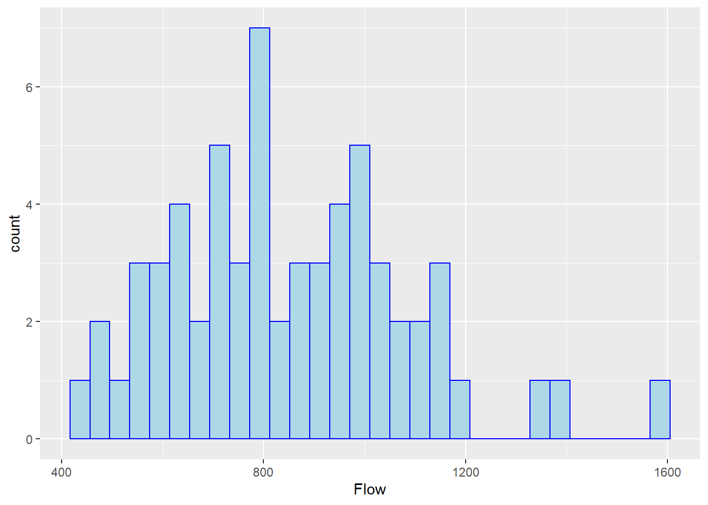
No comando existem dois tipos de informação, separadas pelo símbolo \(+\). Este símbolo marca o fim de uma camada e início da outra. No ggplot() cada camada adiciona um elemento novo ou formata um elemento existente no gráfico. A ordem em que as camadas são inseridas raramente importa, ainda que seja interessante inserí-las de modo que facilite a leitura do código. No exemplo acima temos as camadas gedaras por:
ggplot(): esta função mostra um argumentodata =, onde informamos o nome dodata.framede onde serão lidos os dados (No ggplot, os dados sempre devem estar dispostos dentro de um data frame). No segundo argumentomapping =, informamos sobre a estética do gráfico. Por hora, esta estética foi limitada aaes(x = Flow), dizendo que nosso gráfico irá conter no eixoxa variávelFlowdo data frame.
Até este momento não definimos qual será o tipo gráfico.
- Na segunda camada estabelecemos a geometria do gráfico, neste caso composta por um histograma (
geom_histogram), onde a cor da borda foi definida porcolor = "blue"e o preenchimento porfill = "lightblue".
Vamos adicionar algumas formatações adicionais:
ggplot(data = hub, mapping = aes(x = Flow)) +
geom_histogram(color = "blue", fill = "lightblue") +
labs(title = "Histograma de vazão do riacho Hubbard",
x = bquote(Vazao (m^3/s)),
y = "Contagem") +
theme(plot.title = element_text(hjust = 0.5))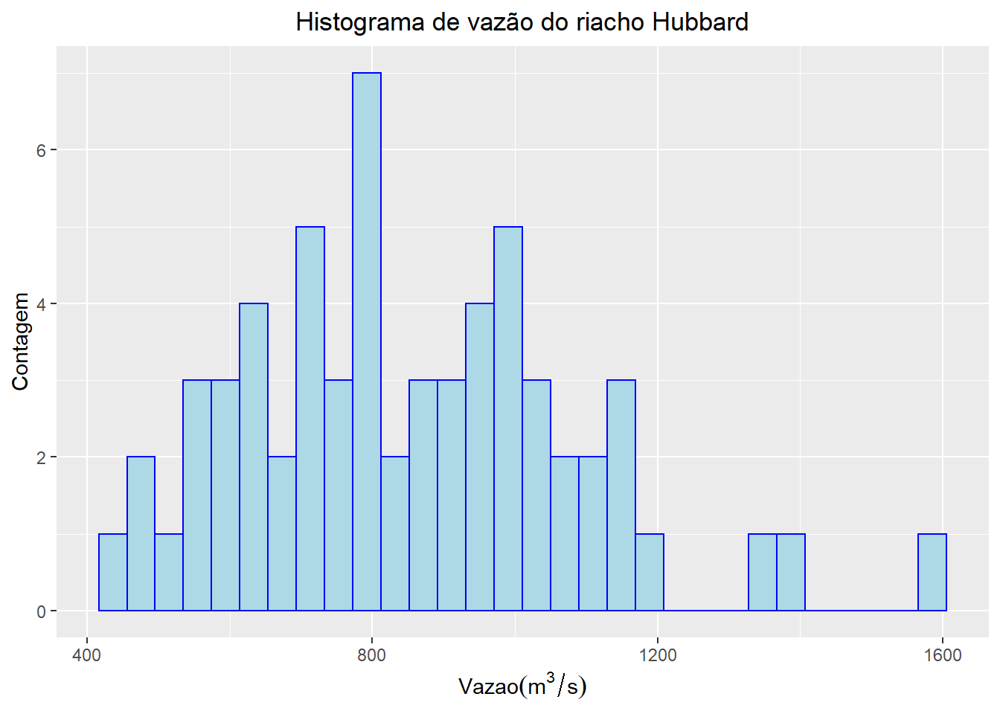
Formatamos agora o título, os nomes dos eixos x e y e centralizamos o título (theme(plot.title = element_text(hjust = 0.5))).
Embora possa parecer muita informação de uma única vez (e de fato é), o ponto é que você não precisará decorar nenhuma delas (mas se utilizar, acabará decorando!!). Uma simples busca por centralize title ggplot2 te levará a estes comandos.
No histograma anterior, a vazão foi medida anualmente em trechos Deforested e em trechos Deforested. Vamos então adicionar esta variável à estética (aes()) do gráfico, diferenciando os grupos em função da cor.
ggplot(data = hub, mapping = aes(x = Flow, color = Treatment, fill = Treatment)) +
geom_histogram(alpha = 0.5)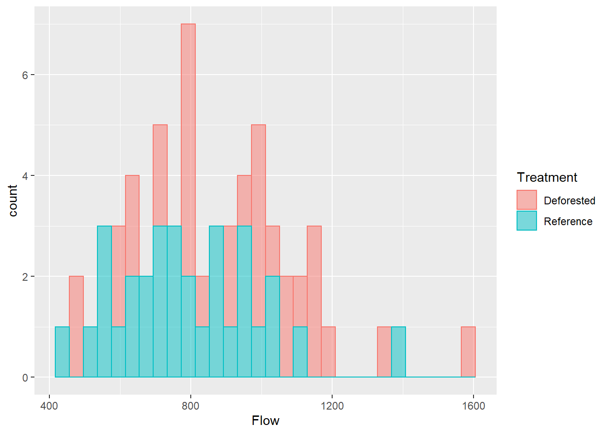
8.1.2 Outras Geometrias gráficas
Além dos histogramas temos muitas outras geometrias gráficas do tipo geom_NOME(). Algumas muito utilizadas são:
- geom_abline()
- geom_bar()
- geom_boxplot()
- geom_line()
- geom_point()
- geom_smooth()
- geom_text()
8.2 Gáfico de dispersão
ggplot(data = hub, mapping = aes(x = Precipitation, y = Flow)) +
geom_point(shape = 21) +
labs(y = bquote(Vazão (m^3/s)),
x = bquote(Precipitação (m^3/ano)))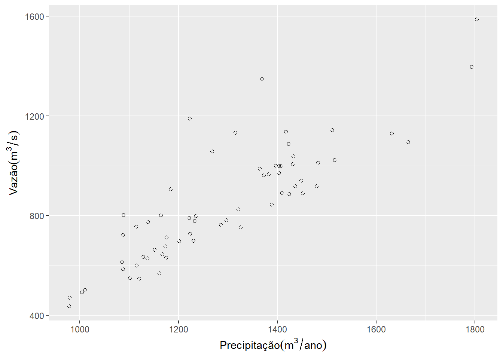
Adicionando o Treatment à cor do gráfico e formatando a legenda.
ggplot(data = hub, mapping = aes(x = Precipitation, y = Flow, fill = Treatment)) +
geom_point(shape = 21, size = 3) +
labs(y = bquote(Vazão (m^3/s)),
x = bquote(Precipitação (m^3/ano))) +
guides(fill=guide_legend(title="Estado da área")) +
scale_fill_manual(values = c("blue", "yellow"))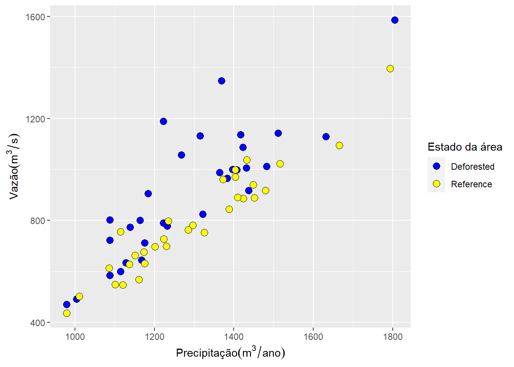
Adicionando um texto com informação do Ano de mensuração.
ggplot(data = hub, mapping = aes(x = Precipitation, y = Flow, label = Year
, color = Treatment)) +
geom_text(size = 3) +
labs(y = bquote(Vazão (m^3/s)),
x = bquote(Precipitação (m^3/ano))) +
guides(color=guide_legend(title="Estado da área")) +
scale_color_manual(values = c("blue", "red"))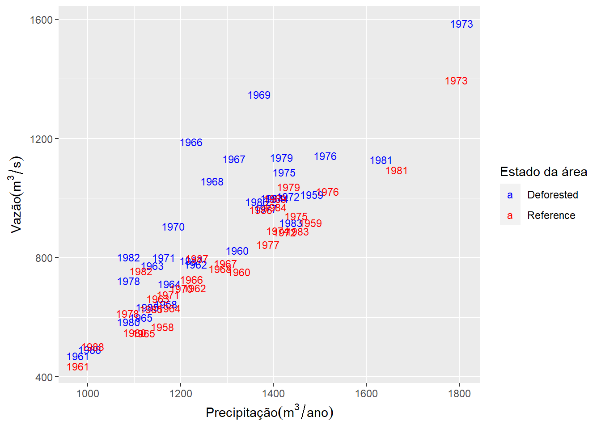
8.3 Boxplot
ggplot(data = hub, mapping = aes(x = Treatment, y = Flow)) +
geom_boxplot() +
labs(y = bquote(Vazão (m^3/s)),
x = "")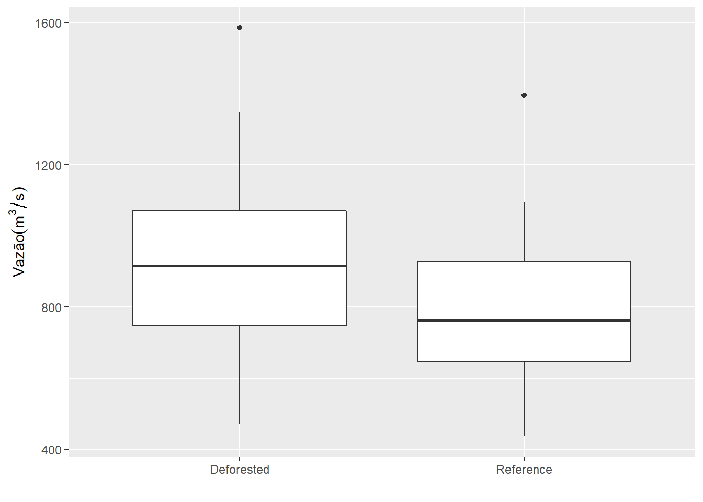
Vamos inverter a ordem dos boxplots.
ggplot(data = hub, mapping = aes(x = Treatment, y = Flow)) +
geom_boxplot() +
labs(y = bquote(Vazão (m^3/s)),
x = "") +
scale_x_discrete(
limits = c("Reference", "Deforested"))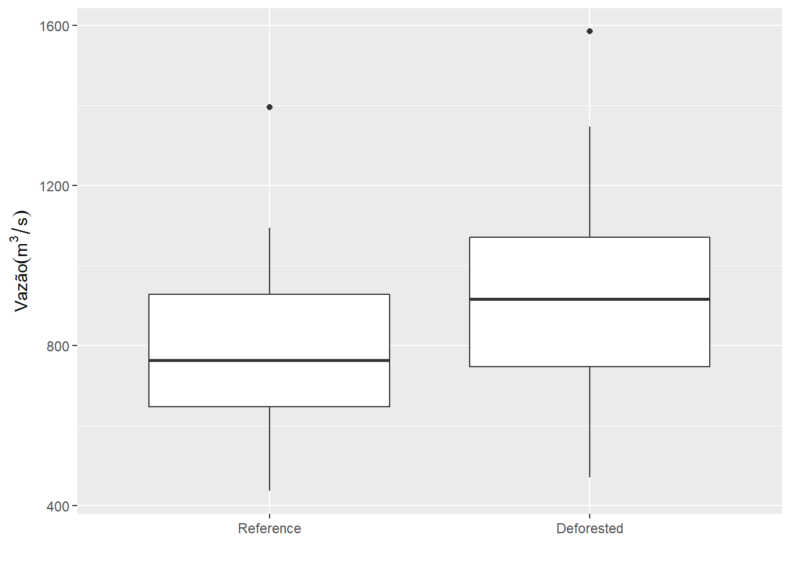
8.4 Gráfico de linhas
hub %>%
filter(Treatment == "Deforested") %>%
ggplot(mapping = aes(x = Year, y = Flow)) +
geom_line() +
labs(y = bquote(Vazão (m^3/s)),
x = "Ano")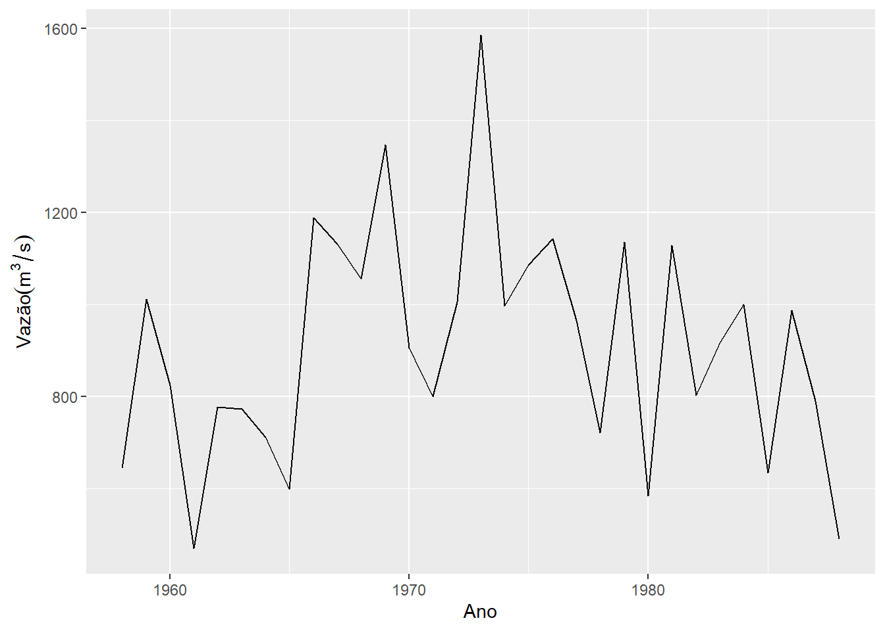
Na figura, utilizamos o operador pipe, e a função filter() para extrair somente as linhas do riacho desmatado. Vamos adicionar os dois riachos.
ggplot(hub, mapping = aes(x = Year, y = Flow, color = Treatment)) +
geom_line() +
labs(y = bquote(Vazão (m^3/s)),
x = "Ano")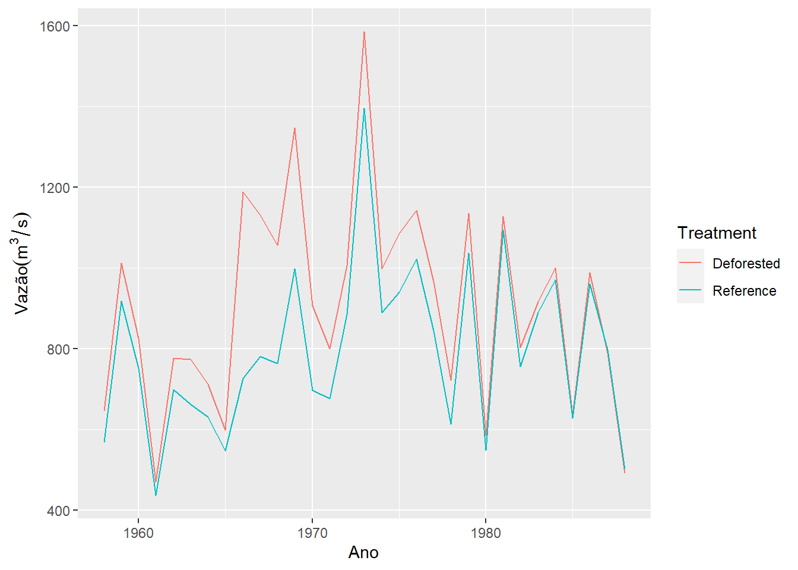
8.5 Gráfico de barras
Vamos criar uma variável categórica Vazao_cat contendo os níveis Extrema (se Flow \(>= 1000 m^3/s\)) e Normal caso contrário. Em seguida vamos contar o número de observações com vazão extrema.
extremo <- 1000
hub %>%
mutate(Vazao_cat = ifelse(Flow >= extremo,
yes = "Extrema",
no = "Normal")) %>%
ggplot(mapping = aes(x = Vazao_cat)) +
geom_bar()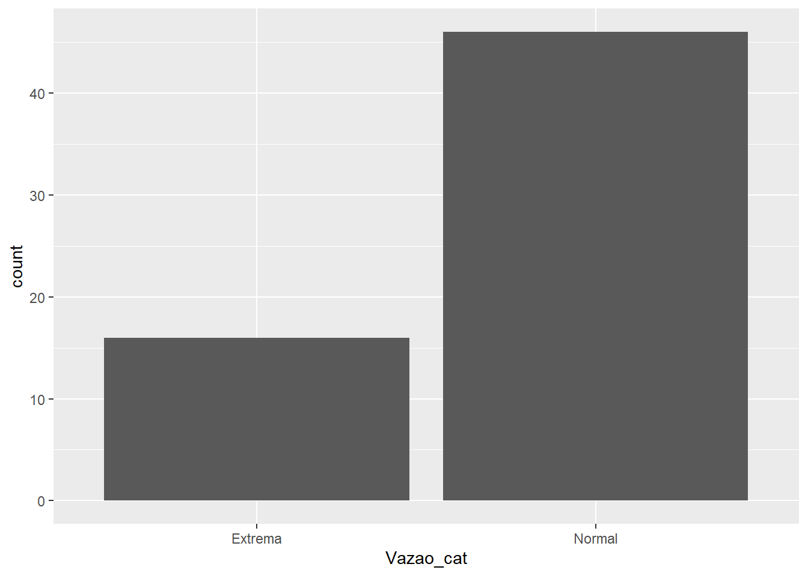
Se dissermos que a variável está em y (aes(y = Vazao_cat)) o gráfico fica na horizontal.
hub %>%
mutate(Vazao_cat = ifelse(Flow >= extremo, yes = "Extrema", no = "Normal")) %>%
ggplot(mapping = aes(y = Vazao_cat)) +
geom_bar()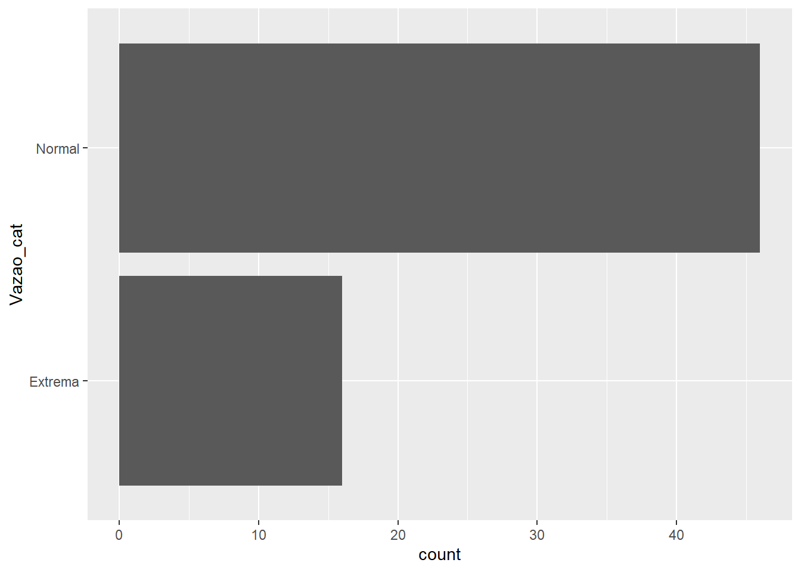
8.6 Temas no ggplot2
Embora possamos formatar todos os elementos gráficos, o ggplot2 vem com temas pré-formatados que facilita este processo. Vejamos alguns. Para escolher um tema adicionamos uma camada com seu nome (theme_NOME()). Veja o exemplo:
ggplot(hub, mapping = aes(x = Year, y = Flow, color = Treatment)) +
geom_line() +
theme_classic()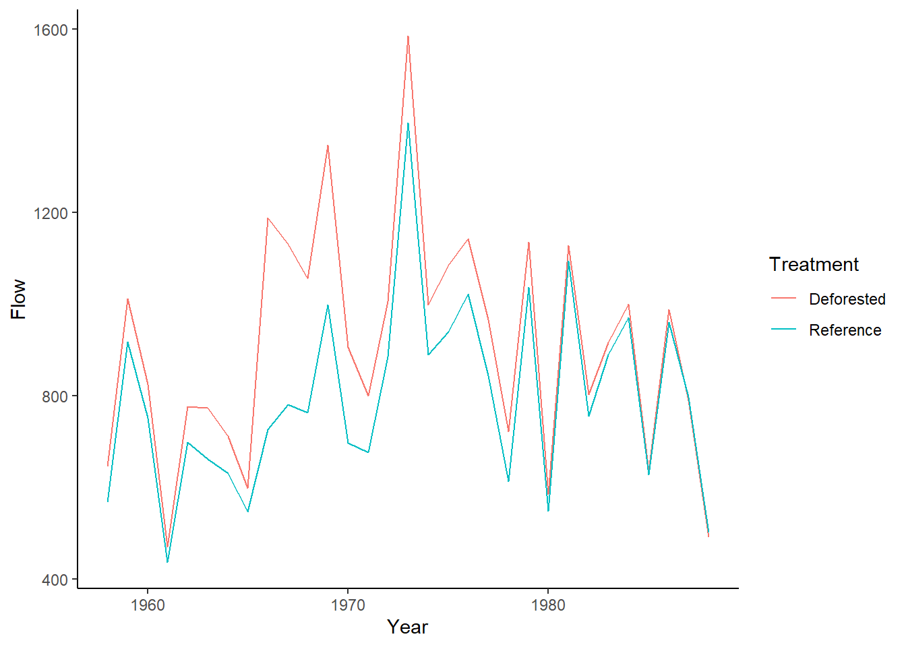
Os temas básicos estão exemplificados abaixo. Além destes, o pacote ggthemes oferece uma extensa variedade de outras formatações.
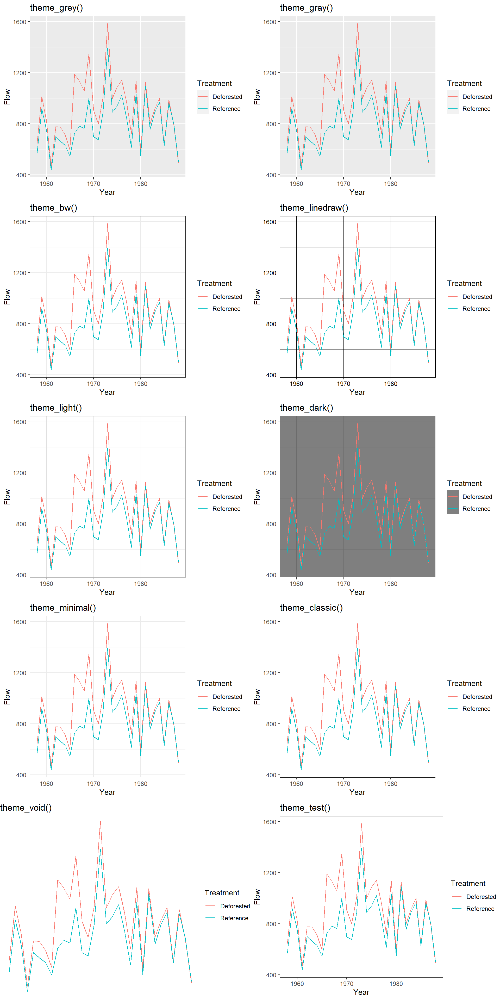
8.7 Salvando uma figura gerada pelo gglot2.
Uma forma simples de salvar um gráfico gerados pelo gglot2 é utilizando a função ggsave().
ggplot(hub, mapping = aes(x = Year, y = Flow, color = Treatment)) +
geom_line() +
theme_classic()
ggsave(filename = "Exemplo_ggsave.png",
device = "png",
width = 20,
height = 20,
units = "cm",
dpi = 480) Por padrão a função ggsave() salva o ultimo gráfico criado. Porém se existe um objeto salvo, você pode especificá-lo com o argumento plot = objeto_grafico.